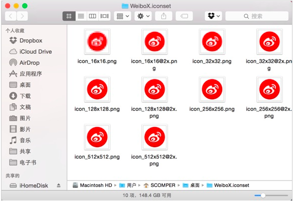

如何制作和更换 macOS 应用图标
参考文章来自 简书
大部分情况下OS X 的应用图标质量都过得去，并不会折磨你到发狂以至于产生要美化的念头，不过总有例外 …… 比如LICEcap。作为一款跨平台的优秀 GIF 录屏工具，之前 windows 系统时我就在用它。但是那时的美化冲动没现在这么强烈，切换到 OS X 平台后那老旧的图标显得那么格格不入。
还有想要美化的软件就是 Sublime Text 3。其实平心而论 ST3 的图标还算可以，但是相对于其精美的 UI、漂亮的语法着色来说图标还是感觉差了一点点，而且作为一个 ST 衷心拥护者，但凡有折腾的空间是绝对不会放过的 :)
如何更换应用图标
Mac 系统里更换程序图标很简单。直接双击打开任意图像文件Command + C，然后Command + I打开程序的显示简介界面选中左上角的缩略图标，Command + V粘贴替换完成。
想要图标好看点的话，最好选择背景透明的图片
要恢复默认的图标，选中显示简介中的图标（蓝框选中状态），直接按delete键即可。
如果想要重装完系统或者分发该应用给别人时仍保持更改，则建议直接替换应用原有的图标。鼠标右键Show Package Contents - Contents - Resources，在该目录你应该能找到应用原图标，用下载好的 icns 图标文件替换掉其即可。根据情况，你可能需要重启Finder或Dock来刷新图标缓存以生效。
如何制作 icns 图标
你需要明白 icns 文件实际上包含的是一组不同分辨率的图标（512、256、128、32、16），为了适应 Retina 屏幕的显示还有对应的2x 分辨率图标。双击图标文件用「预览」程序打开可以清楚的看到。
首先你需要各种分辨率的 png 文件，自行绘制也好网上下载也好。一般从 Dribble, Deviantart, iconpng, easyicon, findicons 等网站搜索查找。然后将各种分辨率的图片更名并保存到类似WeiboX.iconset的文件夹中。
借一张图来看看:

然后打开终端程序，输入命令:
iconutil -c icns /路径/icon.iconset
就能生成最终的 icns 文件。例如，范例中WeiboX.iconset文件夹放在桌面，打开终端程序后，输入 iconutil -c icns 注意后面空一格，然后直接从桌面将 WeiboX.iconset 文件夹拖拽到命令行后，这样就不用自己输入路径了。
目前我仅更换了 LICECap 和 Sublime Text 3 的图标。当然，也给自制截图小工具 dcap 做了个图标，只不过懒得找更高分辨率的图片，只能说凑活能用，与默认的 Automator 图标区分开就行。
最后 show 下我更换完的 ST3 图标:
文章链接：https://macplay.github.io/en/posts/ru-he-zhi-zuo-he-geng-huan-macos-ying-yong-tu-biao/
发布/更新于：
版权声明：如无特别说明，本站文章均遵循 CC BY-NC-SA 4.0 协议，转载请注明作者及出处。